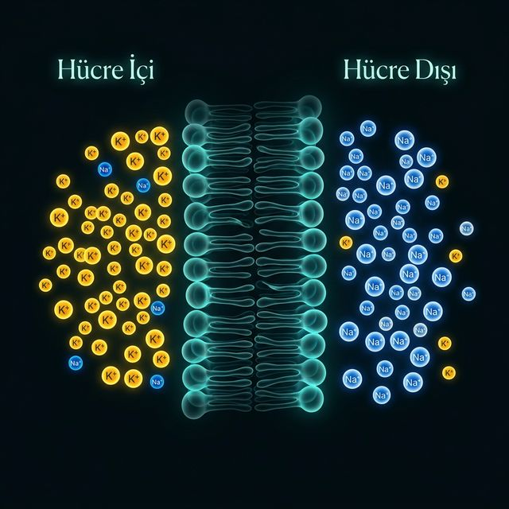

Dinlenme potansiyelini yaratan yük dengesizliği rastgele değil — hücrenin içi ve dışındaki iyon miktarları arasında çok belirgin bir asimetri var.
K⁺ içeride 140 mM, dışarıda yalnızca 5 mM (28 kat fark). Na⁺ ise tam tersi; dışarıda 145 mM, içeride 15 mM. Bu kimyasal "sıkışma" hissi, sinyallerin potansiyel enerjisidir.
Bu gradyanlar bırakılsa zamanla bozulur. Na⁺/K⁺ pompası ATP harcayarak bu dengesizliği sürekli yeniden kurar. Beyin enerjisinin %20-40'ı sadece bu işe harcanır.
| İyon | İç (mM) | Dış (mM) | Konum |
|---|---|---|---|
| K⁺ | 140 | 5 | İçeride yoğun |
| Na⁺ | 15 | 145 | Dışarıda yoğun |
| Cl⁻ | 10 | 110 | Dışarıda yoğun |
| Ca²⁺ | 0.0001 | 1.5 | Dışarıda yoğun |
K⁺ ve Na⁺ birbirinin aynası gibi — biri içeride fazla, diğeri dışarıda. Bu asimetri tüm elektriksel sinyalleşmenin hammaddesidir.
